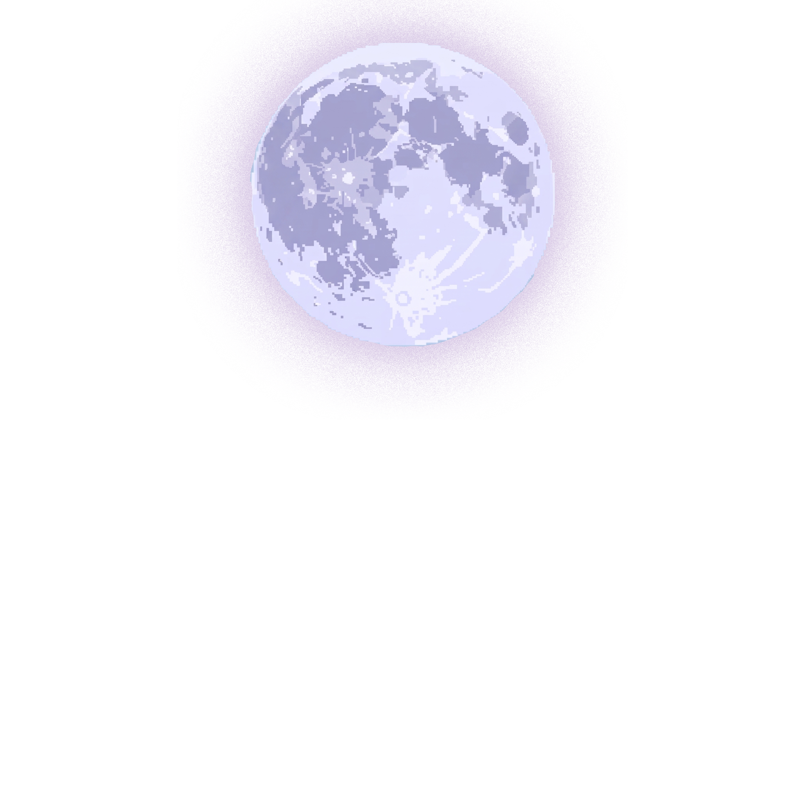
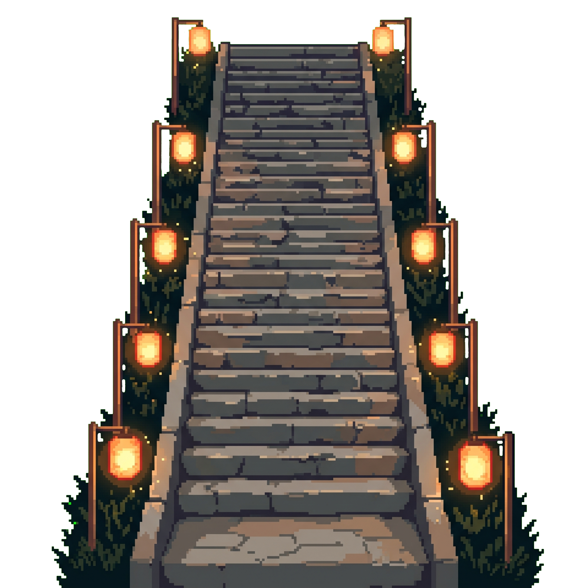

Guia de viagem pelo:
JAPÃO
Veja o que visitar no Japão, explore rotas e amplie suas ideias.





Um pedacinho do Japão
em pixel art

Cinco destinos no Japão
Tóquio
Templos, letreiros luminosos e bairros com ritmos diferentes convivem na capital japonesa.
Planejar uma visita